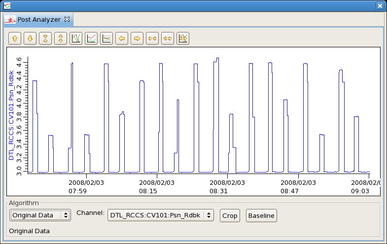
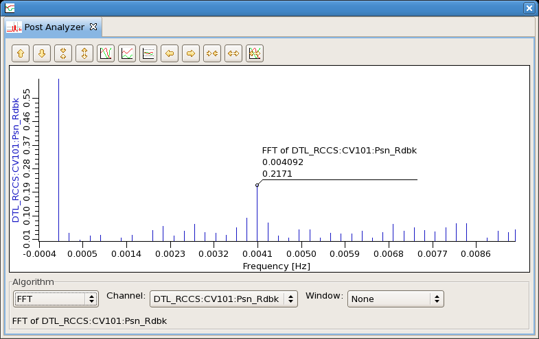
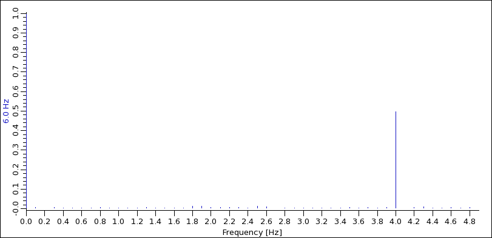
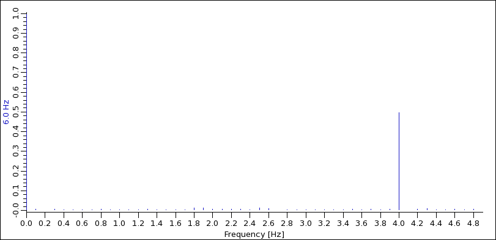

Post Analyzer
This tool can analyze time series data,
for example from the Data Browser, in various ways.
Add Data
Get data into the Data Browser Plot,
then open the Data Browser Config View
and use the context menu of selected
data browser PVs or formula items
to send their data to the Post Analyzer.
Algorithms
The following describes the available algorithms.
Original Data
This algorithm simply displays the original data of the
selected channel.

Crop
The "crop" operation removes all samples which are before
or after the visible section of the time axis in the plot window.
This can be used to restrict the algorithms to only subsections
of the data that was originally imported.
Baseline Removal
The "baseline" operation turns the lower end of the "Y" (vertical) axis
into the zero point of the data, i.e. it subtracts the value of the
lower Y axis end from all samples.
Line Fit
Performs a line fit to the data. The slope of the line reflects the change
of the signal in one second.
Exponential Fit
Attempts to fit the data to an exponential rise or decay.
 Note that this only works if the signal really follows
an exponential function
Note that this only works if the signal really follows
an exponential function ampl * exp(-x/decay).
If the data contains a constant baseline offset
baseline + ampl * exp(-x/decay),
the fit will fail.
One can sometimes remove this baseline offset by zooming
such that the lower end of the "Y" axis is at that baseline,
and then using the "Baseline" removal button.
Gaussian Fit
Attempts to fit the data to a Gauss distribution.
Correlation
Correlates two different channels, using one for the "X"
and the other for the "Y" axis.
When both channels are the same or closely related, the result
is a diagonal line.
FFT
Computes the Fourier transform, i.e. the frequency spectrum of the signal.
The data in the initial "Original Data" example represented a valve position
that cycled about every 4 minutes, i.e. every 240 seconds or 1/240 = 0.004 Hz.
The FFT shows this 0.004 Hz frequency component in addition to the usually
big "DC" component at 0 Hz and some others.

Aliasing, Nyquist Limit
That the FFT upper spectrum limit is at the so called Nyquist
frequency. Given data points every T seconds, the Nyquist frequency is 1/(2T) Hz.
When sampling every 0.1 seconds, i.e. at 10 Hz, the the FFT includes components
up to 5 Hz. A 1 Hz signal sampled like this...
 ... clearly shows up in the FFT:
... clearly shows up in the FFT:
 A 6 Hz signal, however, cannot be properly detected in such an undersampled
setup. The FFT will show an alias 4 Hz component instead of the true
6 Hz frequency.

A 6 Hz signal, however, cannot be properly detected in such an undersampled
setup. The FFT will show an alias 4 Hz component instead of the true
6 Hz frequency.

Window Filters
While the sample period defines the upper limit of the FFT spectrum,
the total sample count defines the granularity of the FFT.
In most cases, frequencies of interest can lie between those spectrum
points for which the FFT is computed.
By applying a window filter to the original signal, such problems
are reduced.
See detailed FFT description.